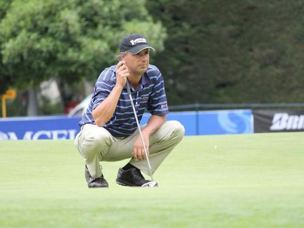
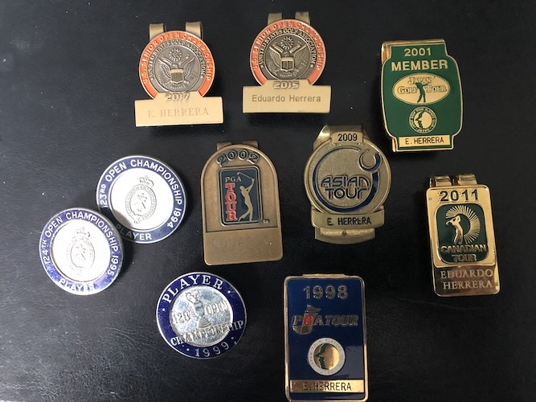
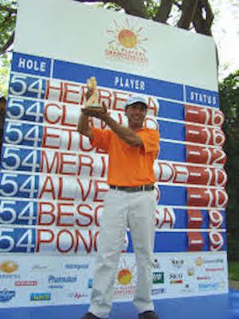
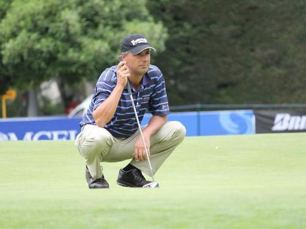
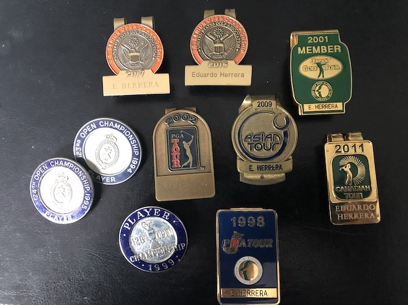
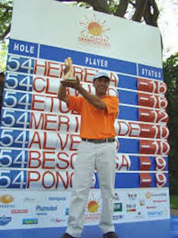

Home |
Resume |
About Me
Amateur Achivements
Professional Regular Tour Achivements
Professional Champions Tour Achivements
Other Golf Achivements
About Me
This paragraph is for demostration purposes.
This paragraph is for demostration purposes.
This paragraph is for demostration purposes.
I was born in Colombia South America. I attended B.Y.U on a golf scolarship and made all American three out of the four years I palyed college golf.
Married to a former Colombian women amateur champion. Father of four kids, two boys and two girls.
Some of my favor hobbies include reading and solo-flying.
I reside in Windermere, Florida.
 





- Amateur Achivements
- Colobian junior champion 1980, 1981, and 1982
- Junior world Runner-up
- World Ameteur invididual Champion 1987
- Three times All American division I
- WAC player of the year 1987
- Six College tornament victories
- Professional Regular Tour Achivements
- Ranked in the top 100 players in the world 1999
- JGT (Japan Golf Tour) member 1988~2002
- Six victories in the JGT
- Member of the PGA Tour 2002
- Member of the Nationwide Tour 2003~2009
- Mexican Open Champion 1983
- Winner of over 20 professional golf touernaments worldwide
- World cup team participant 1994~1997
- Three times Bristish Open participant
- Professional Champions Tour Achivements
- Two times Florida Senior Open Champion 2015, and 2017
- Two times US Open Senior participant
- Other Golf Achivements
- First Colombian in the top 100 of the GWR
- The Colombia National Junior Championship carries my name after the win in the World Amateur Championship in 1986
- Two times captain of the Latinoamerican Team
Back to the Top